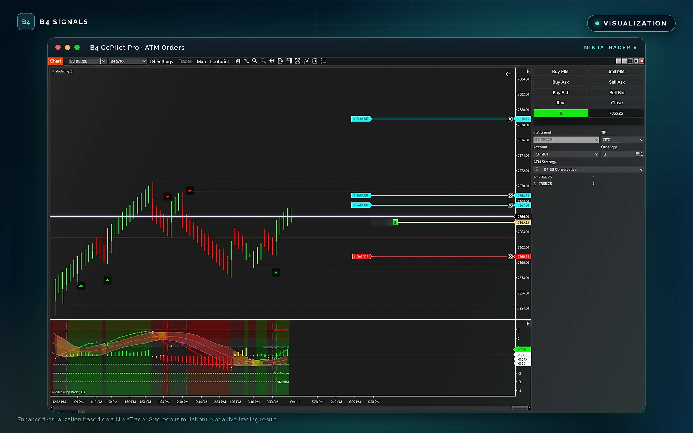

One execution engine. Unlimited possibilities for compatible signal sources.
See it work: hear the market, execute your rules
B4 Tape calls the order flow out loud while B4 CoPilot Pro places your configured setup with your own NinjaTrader® ATM strategy, and stands aside when conditions look like news.
Hypothetical performance results have certain limitations; see the CFTC Rule 4.41 notice below. Past performance is not indicative of future results.
- Open signal integration: B4, third-party and your own custom indicators feed CoPilot Pro through the B4 Signal API
- Order-flow intelligence from B4 Order Flow and B4 Auction Pro, built into every entry decision
- Multi-signal confirmation: one or more, X or more, or all of your signals must agree
- Automated execution with NinjaTrader ATM strategies for your stops and targets
- Entry Guard: one entry per account and instrument, and an entry log that records every signal as taken or not taken, with the reason
What's inside (9)
- B4 CoPilot Pro · formerly B4 CoPilot Pro (existing build) Finds B4 signals on every closed bar and enters through your own ATM strategy.
- Imbalances Tune the ratio, minimum volume and stack size behind CoPilot's imbalance rules.
- Strategy Choose how many signals must agree and whether CoPilot follows or fades them.
- Tape Filters Checks the B4 Tape right before each entry and blocks entries it disagrees with.
- Machine Learning Optional score for each signal, trained on this chart's history, in place of the confirmation filters.
- Risk Management Stops new entries for the session once your profit goal or loss limit is reached.
- Session Set when CoPilot looks for signals, when it may enter, and on which weekdays.
- Entry Guard + Tape Watch Blocks doubled entries and logs every signal as taken or not taken, with the reason.
- Use Chart Indicators Lets the B4 indicators on your chart add their buy and sell signals to CoPilot's count.
Availability: Available today.
More about B4 CoPilot Pro
Preview


VISUALIZATION · Enhanced visualizations based on NinjaTrader 8 screens. Not a live trading result. Select an image to open it full size.
Bring any compatible indicator
B4 CoPilot Pro is not limited to B4 indicators. It is an open signal-integration and execution platform: any indicator that speaks the B4 Signal API can drive it. Add the indicator to your chart, and CoPilot Pro finds it, reads its signals and puts them to work under your rules.
The API publishes signals, not orders. Your indicator says what it sees. CoPilot Pro checks your rules and handles the execution.
- B4BuySignals and B4SellSignals: the indicator's long and short entry signals, bar by bar.
- B4ConfirmationDirections: its directional read, used to confirm or hold back a trade.
- B4UseEntrySignals and B4UseConfirmations: two switches that tell CoPilot Pro to use the indicator for entries, for confirmation, or for both.
Five members, one contract. B4 tools, third-party indicators and your own code all plug in the same way.
Free resources for developers
Build your own signal sources with the free B4 Indicators Developer Kit, the B4 Developer Repository and B4 Studio, the B4 indicator and strategy builder that generates preview templates you can take further. Every indicator you build can communicate with CoPilot Pro.
Order-flow intelligence, built in
CoPilot Pro reads the market the way a tape reader does, with order-flow intelligence from B4 Order Flow and B4 Auction Pro.
- The tape: 36 tape-reading detectors, including sweeps, absorption, refills, stop runs, delta flips, tape speed and exhaustion, with size tiers and spoken callouts.
- The DOM and Level II: stacking and pulling, liquidity walls and order-book imbalance.
- Footprint and auction: bid and ask volume, delta, imbalances and stacked imbalances, volume profile with POC and value area, TPO, CVD and CVD divergence, and liquidity zones.
- Market commentary: a 224-statement spoken commentary library that tells you what the market is doing, in plain English.
Before an entry goes through, CoPilot Pro's tape filters check aggression, absorption, stops and refills, sweeps, room to the next level, and tape bias and freshness.
Confirmation on your terms
Decide what has to line up before a trade is taken. CoPilot Pro waits until it does.
- Entry signals from CoPilot Pro's built-in order-flow setups and from every connected indicator.
- Independent confirmations: require chart indicators, delta momentum, Level II delta and force, stacked imbalances, pivots, session delta or rising volume to agree.
- Order-flow confirmation from the tape filters.
- Trend and market-condition filters: trade trending markets, ranging markets, or let CoPilot Pro choose automatically.
- Number of signals to confirm: one or more, X or more, or all.
Build sophisticated strategies without writing an execution system.
Machine-learning signals from B4 Algo Pro
B4 Algo Pro brings machine-learning signals into the workflow. They reach CoPilot Pro through the B4 Signal API, where they are confirmed and executed under your rules, like any other signal source.
Execution and trade management
- Automated strategy execution: run a single trade, once a day or continuously, or pause with one click.
- Long, short or both: switch each side on or off.
- NinjaTrader ATM strategy integration: stops and targets are placed and managed by the ATM strategy you choose.
- Opposite-signal handling: exit, reverse, move to break-even, or stay in the trade.
- Position management: break-even plus ticks, and daily loss and profit limits that stand the strategy down.
- Entry controls and discipline: trading windows and trading days, one entry per account and instrument, entries only when flat, and an entry log with the reason for every signal taken or not taken.
One engine at the center of the ecosystem
Every source feeds one engine. B4 Confirmation lets a second chart confirm a setup, and CoPilot Pro's built-in confirmation relay picks it up, off until you switch it on.
Open to builders
CoPilot Pro is built for an open ecosystem. Independent developers, educators, strategy builders, trading communities and vendors can connect their indicators and give their users one consistent way to execute.
B4 CoPilot Pro. Your signals. Your rules. One engine to carry them out.
For educational purposes only. Not trading advice. Trading involves substantial risk. Indicator signals, filters, and automated or assisted workflows do not guarantee profitable results.
Enhanced visualizations based on NinjaTrader 8 screens.